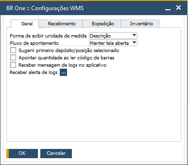

Administração

Na seção Administração, você encontrará todas as autorizações que adicionam comportamentos no SAP.
Autorização Configurações WMS
Nesta autorização, caso seja definido “Sem autorização” o usuário não terá acesso a tela BR One :: Configurações WMS. Para permitir o acesso, defina a autorização como “Autorização total”.
Autorização Cadastro do armazém

Nesta autorização, caso seja definido “Sem autorização” o usuário não terá acesso a tela BR One :: Cadastro do armazém. Para permitir o acesso, defina a autorização como “Autorização total”.
Autorização Usuários - alerta de logs
Nesta autorização, caso seja definido “Sem autorização” o usuário não terá acesso a tela BR One :: Usuários - alerta de logs. Para permitir o acesso, defina a autorização como “Autorização total”.
Autorização Grupo de armazenamento
Nesta autorização, caso seja definido “Sem autorização” o usuário não terá acesso a tela BR One :: Grupo de armazenamento. Para permitir o acesso, defina a autorização como “Autorização total”.